Armamento de la Segunda Guerra Mundial
Tanques y aviones utilizados entre 1939 y 1945.
Selecciona una nación para ver su armamento.
United States and Allies
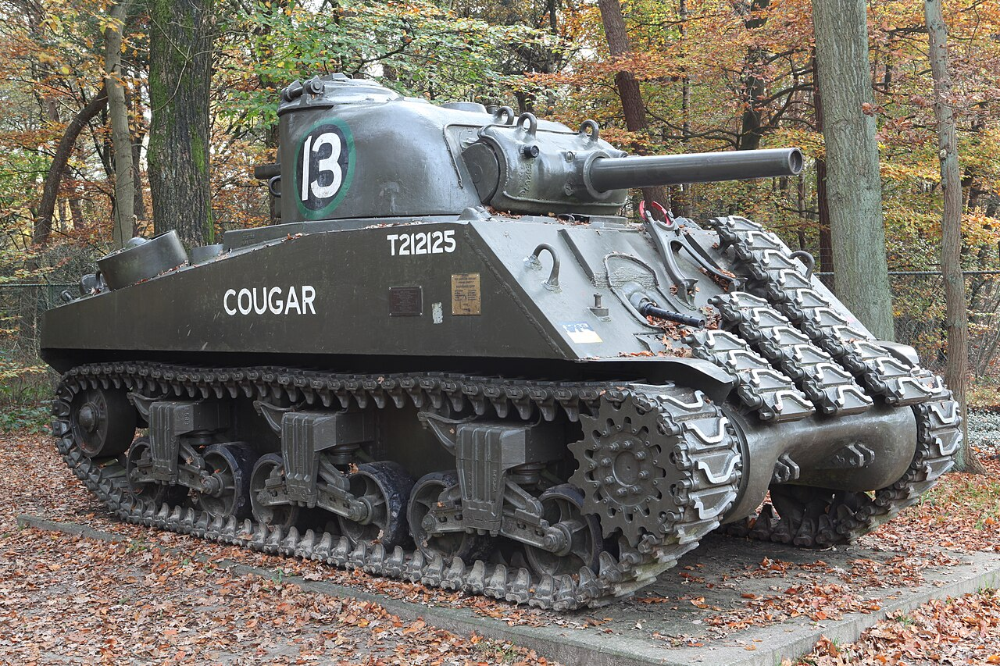
M4 Sherman: tanque medio producido masivamente por Estados Unidos y usado por varios ejércitos aliados.
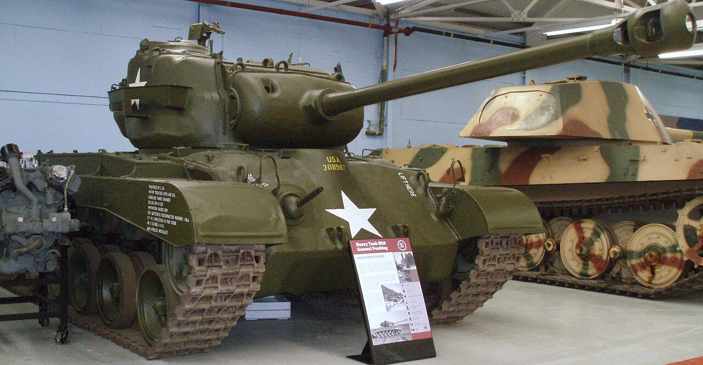
M26 Pershing: tanque estadounidense introducido al final de la guerra con mejor blindaje y mayor potencia de fuego.
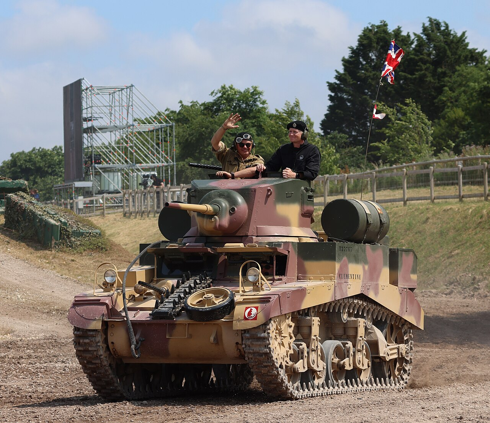
M3 Stuart: tanque ligero aliado producido en masa desde 1941.
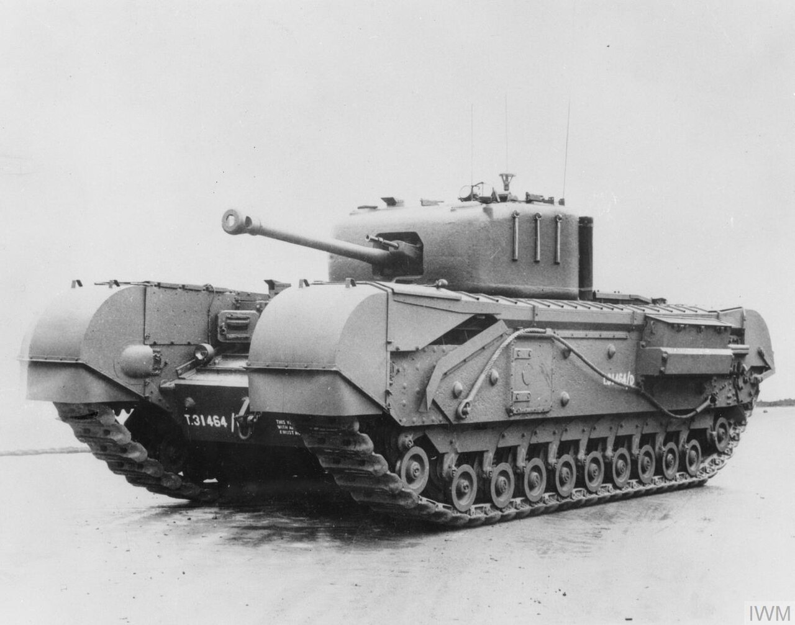
Churchill A22: tanque de infantería británico pesado y resistente, usado en Europa y el norte de África.
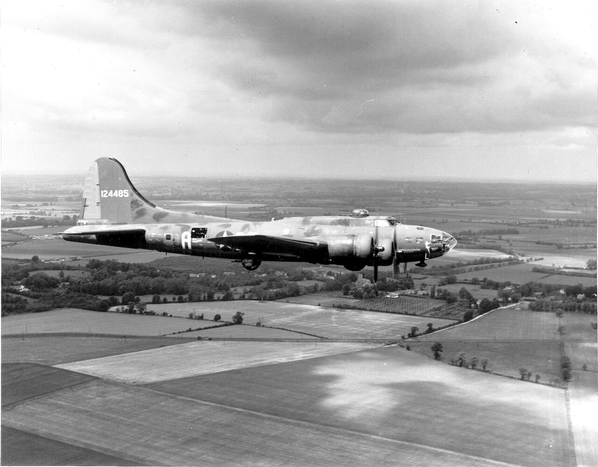
Boeing B-17F Memphis Belle: bombardero pesado estadounidense conocido como la Fortaleza Volante.
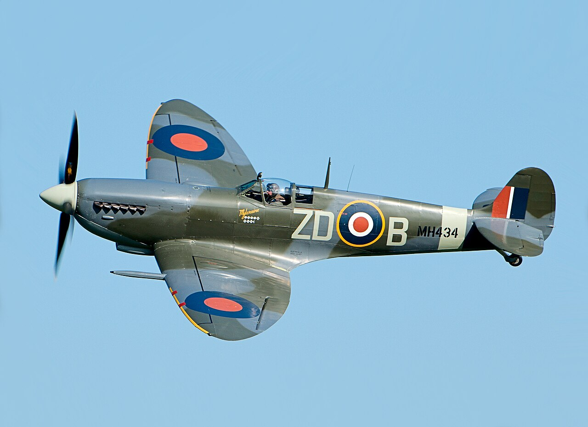
Supermarine Spitfire: caza británico clave en la defensa aérea del Reino Unido.
Deutschland
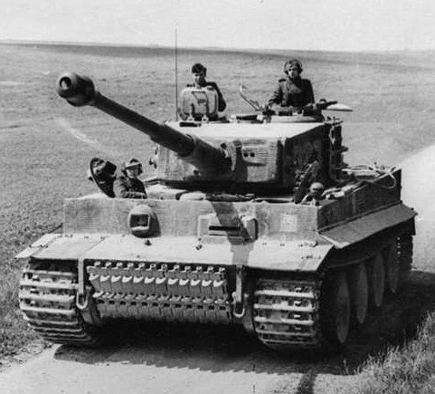
Panzerkampfwagen VI Tiger Ausf. E: tanque pesado alemán famoso por su blindaje y su cañón de 88 mm.
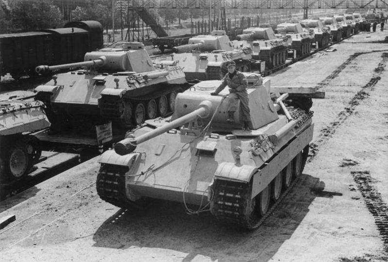
Panther Panzer V: tanque medio alemán destacado por su blindaje inclinado y su potente armamento.
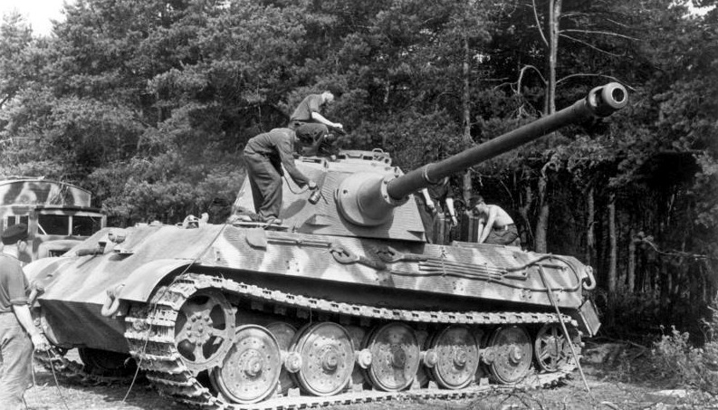
Tiger II Königstiger: tanque pesado alemán con gran protección y elevada potencia de fuego.
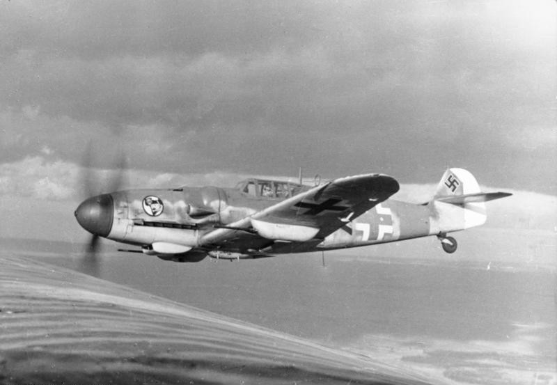
Messerschmitt Bf 109: caza alemán muy producido y usado por la Luftwaffe durante toda la guerra.
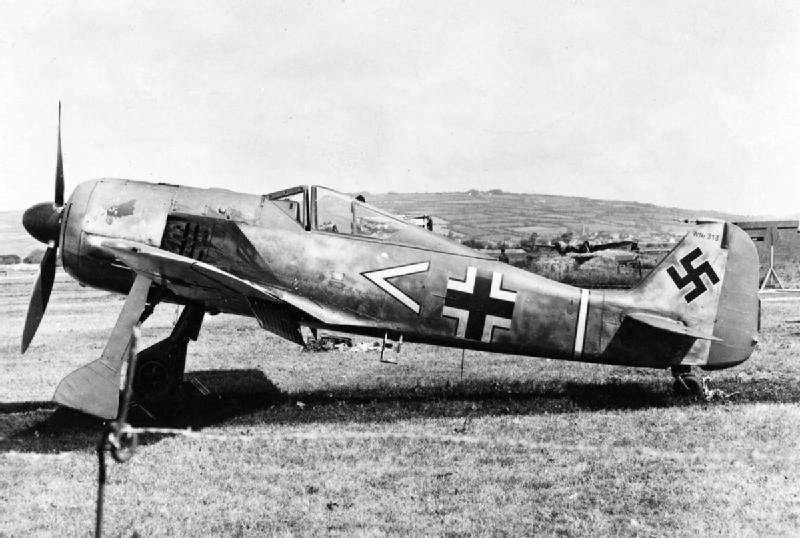
Focke-Wulf Fw 190: caza alemán con gran potencia de fuego y excelente rendimiento a baja y media altitud.
Советский Союз
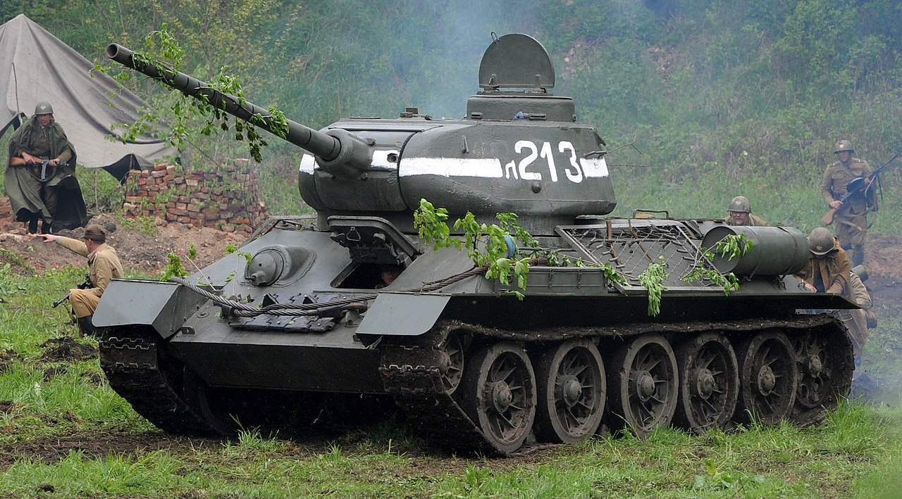
T-34: tanque soviético famoso por su movilidad, blindaje inclinado y potencia de fuego.
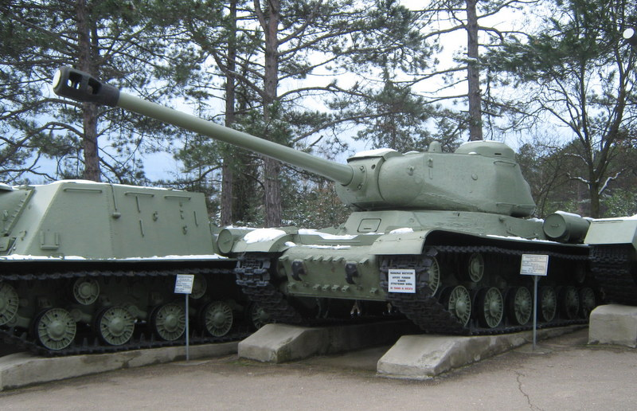
IS-2: tanque pesado soviético usado en las fases finales de la guerra, equipado con un cañón de 122 mm.
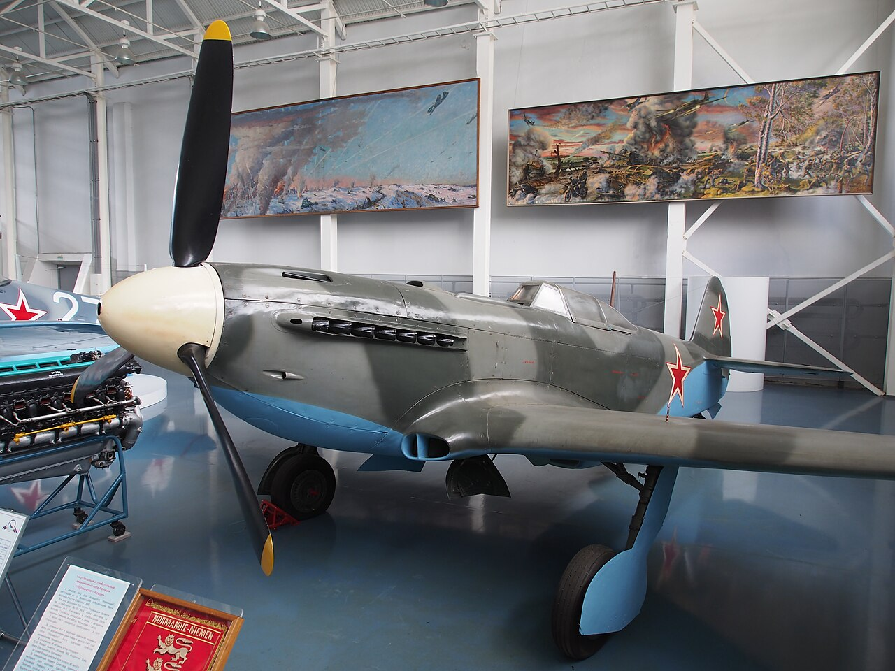
Yak-9: caza soviético ágil, apreciado por su mantenimiento sencillo y buen rendimiento a baja altitud.
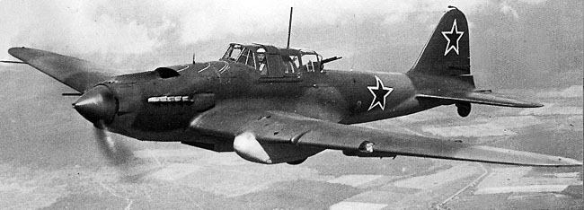
Ilyushin Il-2 Shturmovik: avión de ataque terrestre soviético, robusto y efectivo contra tropas y vehículos blindados.
大日本帝国
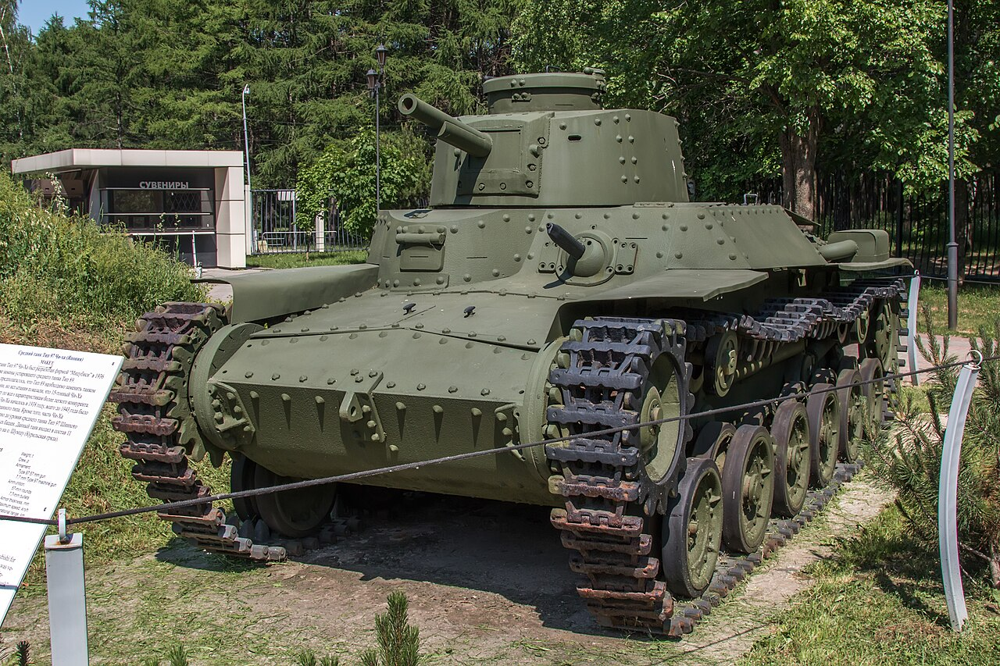
Tipo 97 Chi-Ha: tanque medio japonés ampliamente producido y usado en combate.
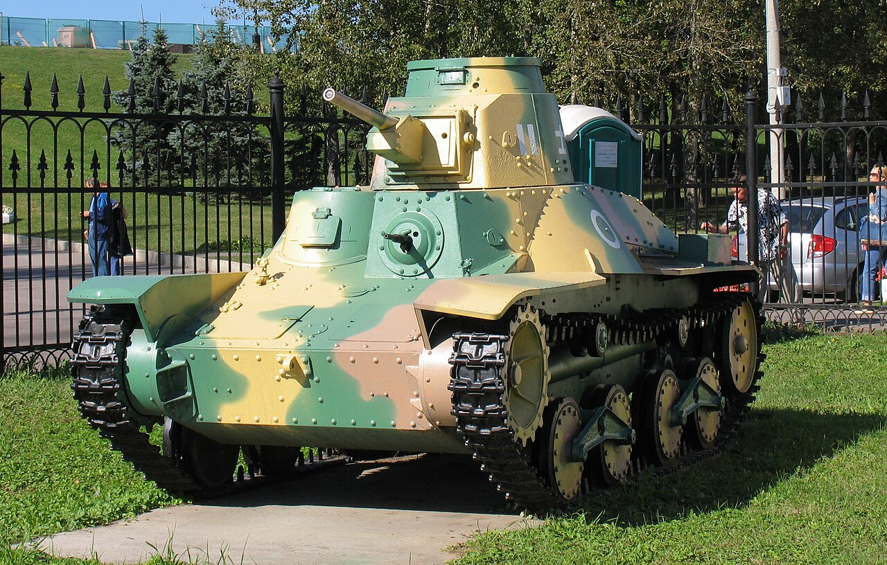
Tipo 95 Ha-Gō: tanque ligero japonés, uno de los blindados más utilizados por Japón durante la guerra.
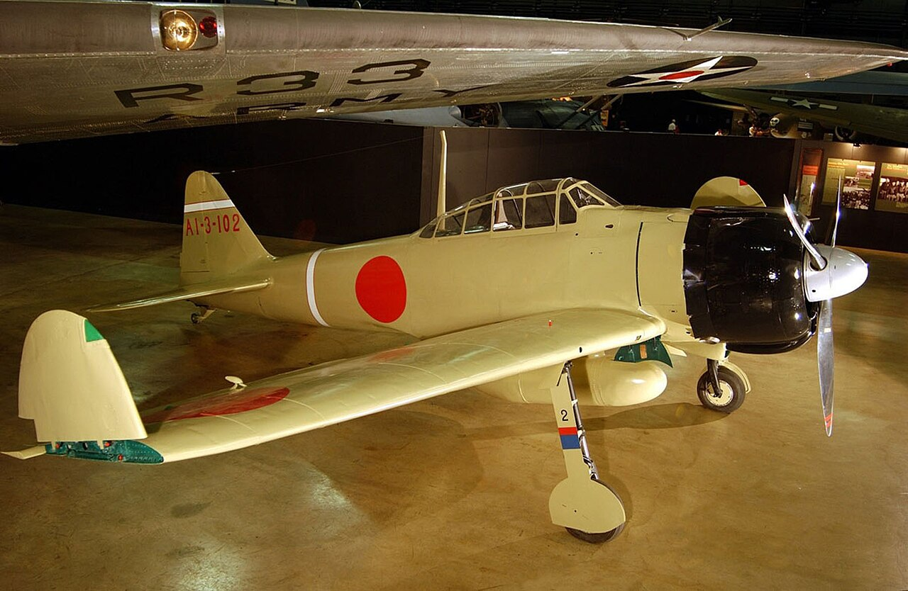
Mitsubishi A6M Zero: caza naval japonés famoso por su maniobrabilidad y autonomía.
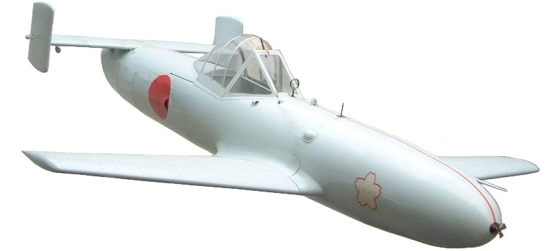
Yokosuka MXY-7 Ohka: avión cohete japonés usado en ataques kamikaze hacia el final de la guerra.